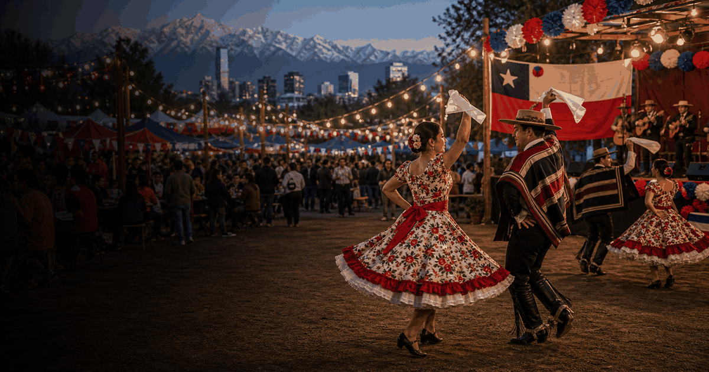

National day event guide
Chile Fiestas Patrias
A compact OneSliders guide to Chile Fiestas Patrias: what it is, how the current edition works and which moments matter most.
 More National dayInterested in more National day?
More National dayInterested in more National day?Explore related events, places and calendar moments.
Chile Fiestas Patrias is tracked as an evergreen event so the general guide stays stable while the year slide changes over time.
The year slide holds dates, place and practical questions in one compact view.
For cultural events, useful history is ceremonies, programme changes, participants, routes and visitor rules.
- The main ceremony or opening moment should be easy to find.
- Archive notes should keep programme changes and notable participants.
- The year slide carries current visitor details and status.
Edition guide
Chile Fiestas Patrias 2026
Choose an edition; only this slide changes.
Dates and programme details should be checked close to the event.
Dates are carried from the current OneSliders event listing.
Host context:  Chile.
Chile.
Check the organiser and city transport pages before travel.
Ticket windows and resale rules vary by edition.
Use the programme slide for the main visitor moments.
This edition is still upcoming.